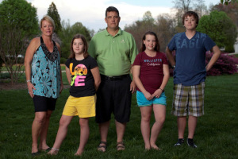

Now it's personal.
The National Waiting List has 120,000+ people and continues to grow exponentially; 4,000 new patients added every year and only 28,000 annual transplant surgeries, steady since 2005. So you must get even sicker to near the top of the Waiting List to be considered for transplant. Compare Transplant Centers reviews your personal situation to give unbiased and strategic comparisons of all the transplant centers within your reach.
We provide the following statistics on all transplant centers of interest:
- the very latest Wait List numbers in any blood type, broken down by MELD ranges, per hospital, OPO and Region
- most current available 1 year Survival statistic percentages, per hospital
- recent MELD-at-Transplant percentages, identifying the hospital’s “sweet spot” of transplant probability
- specific to your liver disease, highlight each hospital’s transplant history by current year and number to date
Additionally, we offer multi-listing recommendations at transplant centers in other Organ Procurements Organizations (OPOs) and other Regions, if at all possible, for a final catch-all. We will research all the possibilities for your exact situation to give the best transplant center recommendation/s and possible pairings, based on SRTR and OPTN statistical data and best strategic practices, utilizing UNOS policies and guidelines.
In a world of organ shortages, we give families the power of analytical and strategic information to make wise and proactive decisions to get patients to transplant sooner for best possible outcome. Although “waiting” is never easy, having the best groundwork put together enables your family to focus on health stability and enjoying life together.
Services
After a free initial phone consultation, gathering facts and necessary details (blood type, liver disease, home zip code and other geographic areas of interest), Compare Transplant Centers will send you a completely tailored report, explaining:
- Organ Allocation Policy
- MELD
- Blood Type
- Regions
- Transplant Center:OPO, the ideal ratio
- Living Donor
- Multi-listing
- Multi-listing in other OPOs and Regions
- Support for your Liver Disease
- Resources
- Helpful Hints
- What to Ask When You Get “The Call”
- What to Pack for a Transplant Surgery
- Bibliography
Based on your situation, Compare Transplant Center will also tailor a comparative and detailed spreadsheet, especially for your situation, based on strategic transplant centers which are within driving distance. Or we can canvas any/all geographic areas in which you desire more detailed information on its centers.
Here’s a partial snippet of the comparative report:

We’ll finish with a comprehensive discussion together, highlighting each of the transplant centers with strategic advantages, including pairings with other excellent centers to double and triple your odds of getting a liver well ahead of time.
Testimonials
Once Compare Transplant Centers team has laid out the Organ Allocation rules and framework under which the transplant centers operate, dozens of people have been given the strategic methodology to maximize their position to getting a liver sooner, before they become deathly ill.
Lisa L. from Texas says:
CTC empowered us in making the most important decisions of our life. Because of Mariel’s kind support and encouragement we finally feel hopeful in what seemed like a dizzying array of information. CTC gave us helpful hints that you can only receive from someone who’s “been there,” detailed data and a way to continue this frightful journey on our own. Our main goal is to make the right choices to give our son the very best chance for survival. CTC provided transplant center information within our home state and nearby states and educated us on the life-saving merits of comparing transplant centers and multi-listing. We can now say with confidence that we have been given the appropriate information and tools to do everything in our power to help our son receive a liver transplant. From the bottom of our hearts, we are forever grateful to CTC.
Steve H. from Florida writes:
I found this site extremely helpful in understanding the OPO and transplant process. It helps clarify geographically my options and underscores the importance of 1:1 ratios and surgical success rates.
Steve M. from California says:
Given the current shortage and often long waits for badly-needed and non-compromised livers, it is imperative to improve one’s odds by adopting strategies that CTC’s analytic expertise can help devise. It is nearly impossible to do this kind of analysis on your own. When life is at stake, it is far better to adopt the experience and expertise of CTC in order to maximize one’s chances for survival. Mariel Carr and her team will not disappoint those who are determined to receive intervention, long before MELD scores reach seriously risky levels (25+).
About Us
So you’ve all heard how Steve Jobs got a liver transplant in Tennessee in 2009. While many people speculated of the medical impact to Apple’s bottom line, I wondered how he did it … how Steve Jobs figured out where to strategically go to find a liver quick.
You see, my husband was waiting for a liver for 5 long years; he was diagnosed with PSC liver disease 9 years before that. Our family missed the real him; he was sick and tired all the time. But as the years dragged on, with our preschoolers now teenagers, I grew sick and tired of waiting to resume a normal life. To us, my husband was the Steve Jobs of our family, an incredible human being worth trying to find Liver 2.0 in order to save him. No matter how it ended, I wanted to look our three children in the eye and be able to tell them that Mom did everything she knew possible to save Dad.

It took many months, but I used all the government websites out there and compiled my own personal spreadsheet to methodically and strategically compare US transplant centers suitable for us. Besides our home transplant hospital, we multi-listed at 3 other centers and over the course of 5 months, he got 4 different calls for transplant:
- One liver we declined at the onset due to its high risk nature.
- One liver was deemed not viable after 12 hours at the hospital.
- My husband was called in to be #2 for another liver, then it was determined #1 was too ill for surgery so he became the new #1. Unfortunately another transplant center in the same OPO had a sicker person so the liver was given to them.
- Finally, the 4th call was the magical one from one of our multi-listed centers.
He got the Gift of Life in August 2012. It is no doubt in our minds that these analytics helped us become more strategic and proactive to clinch a great outcome. His Liver 2.0 is doing wonderfully and we have a sweeter, more beautiful life, taking nothing for granted. I wish this for all my transplant compadres.